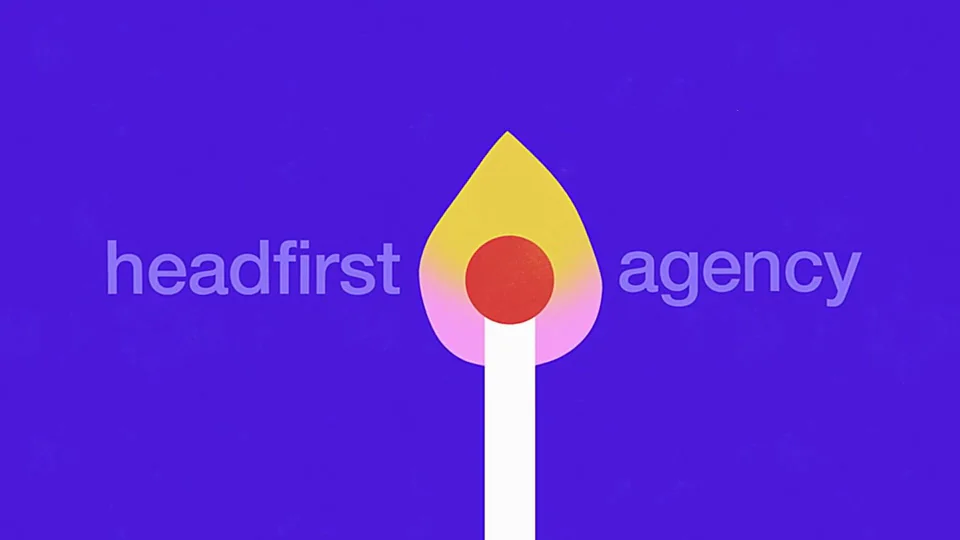
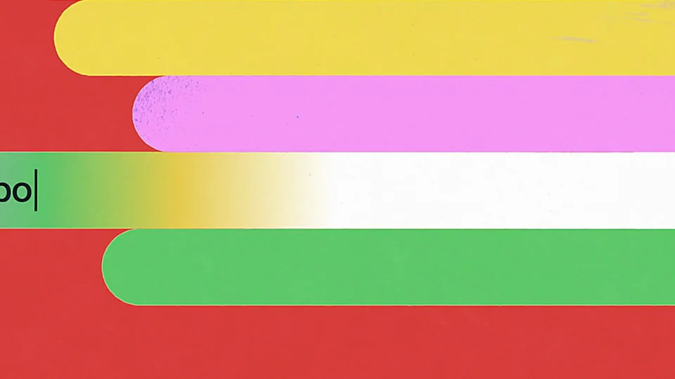
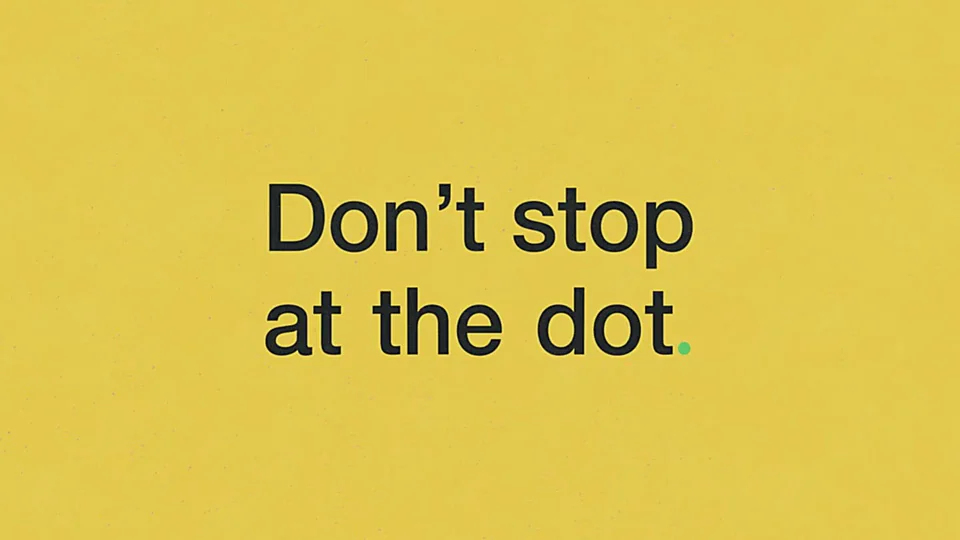

Identity Digital / V381
Identity Digital｜品牌主视觉
把域名中的句点变成转场主角：长网址被拆开，句点放大成几何场景，最后落到更简短的行业后缀。
构图与编排 可播放 · 可替换内容
整体编排规则示例
查看 HTML 源码
<!doctype html><html lang="zh-CN"><meta charset="utf-8"><meta name="viewport" content="width=device-width,initial-scale=1"><title>Identity Digital｜品牌主视觉 · sequence</title><style>html,body{margin:0;width:100%;height:100%;overflow:hidden;background:#4618dc}canvas{display:block;width:100%;height:100%;object-fit:contain}</style><body data-mode="sequence"><canvas width="1000" height="600"></canvas><script src="data.js"></script><script src="common.js"></script><script src="scene.js"></script><script src="bridge.js"></script></body></html>画面元素地址胶囊红色句点同心圆行业后缀图形纹样
MOTION LANGUAGE
动作与构图
局部动作 · 构图规则
01
从网址中的点出发
从网址中的点出发规则示例
查看 HTML 源码
<!doctype html><html lang="zh-CN"><meta charset="utf-8"><meta name="viewport" content="width=device-width,initial-scale=1"><title>Identity Digital｜品牌主视觉 · sequence</title><style>html,body{margin:0;width:100%;height:100%;overflow:hidden;background:#4618dc}canvas{display:block;width:100%;height:100%;object-fit:contain}</style><body data-mode="clip" data-start="2" data-end="8"><canvas width="1000" height="600"></canvas><script src="data.js"></script><script src="common.js"></script><script src="scene.js"></script><script src="bridge.js"></script></body></html>先把完整长网址放入渐变胶囊，随后推近句点。红点离开文字后仍保留颜色与中心，成为下一组圆形图案的起点。
02
不同后缀对应不同图形
摄影可用光圈，游戏可用像素格，旅行可用地平线，媒体可用色条。后缀固定在中心留白，图案在其周围运动，避免图案盖住短词。
03
颜色与字长共同控制密度
紫、黄、红、粉、绿按段落切换，黑字或白字要与底色对比。地址胶囊可横向伸长，但最终后缀保持大字号与充足留白。
04
迁移时替换语义而非只换字
选择新业务真正适用的后缀或关键词，并为它安排一个可理解的几何隐喻。结尾收回点和品牌，结束图形例举。
SEQUENCE
段落与节奏
点击段落，定位到上方编排示意。



画面参考 · 离散静帧
KEEP THE RELATIONSHIPS
制作其他主题
- 可迁移到域名、身份与命名服务；保留符号→语义图案的关系。
制作约束
地址胶囊 / 红色句点 / 同心圆 / 行业后缀 / 图形纹样
- 先把完整长网址放入渐变胶囊，随后推近句点。红点离开文字后仍保留颜色与中心，成为下一组圆形图案的起点。
- 摄影可用光圈，游戏可用像素格，旅行可用地平线，媒体可用色条。后缀固定在中心留白，图案在其周围运动，避免图案盖住短词。
- 紫、黄、红、粉、绿按段落切换，黑字或白字要与底色对比。地址胶囊可横向伸长，但最终后缀保持大字号与充足留白。
- 选择新业务真正适用的后缀或关键词，并为它安排一个可理解的几何隐喻。结尾收回点和品牌，结束图形例举。